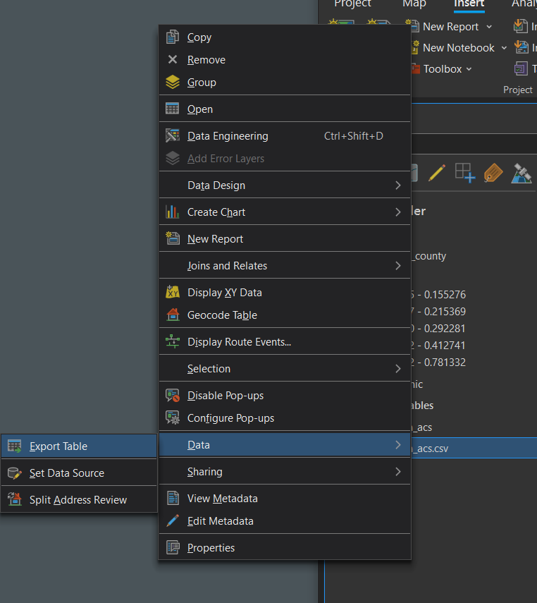
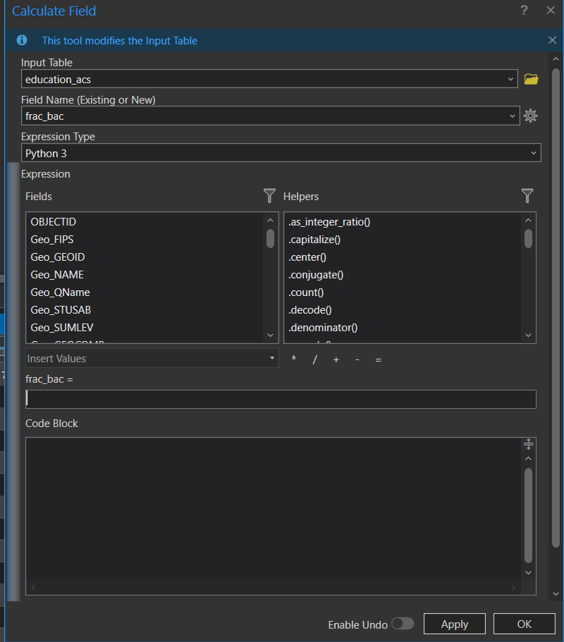
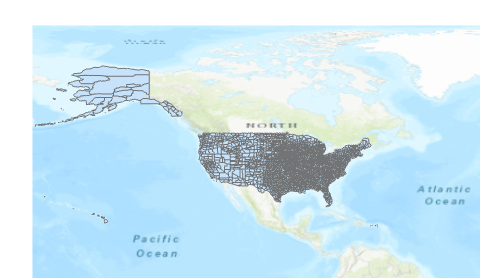
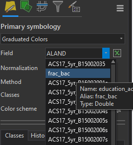
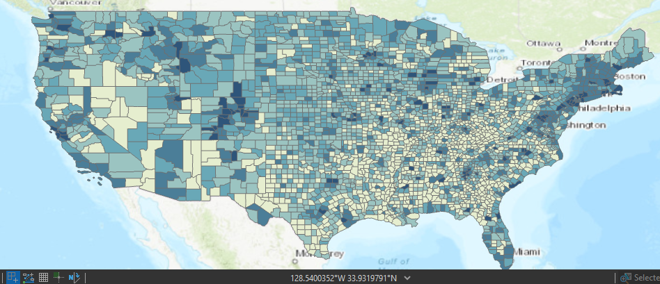

Downloading and mapping Census data
|
· Note that there are no files to download for this exercise. You will be provided instructions on how to download census data from Social Explorer in later steps. · Also note that a professional subscription to the socialexplorer.com website may be needed to download the data. If you are on the UT network, you will have full access to socialexplorer.com. |
In this exercise, you will learn how to query, download and map census data. You will use American Community Survey (ACS) five-year estimates. The ACS is a sample survey collected continuously between decennial censuses.
Step 1: Create a new ArcGIS project and open Social Explorer website
Step 2: Modifying the census data table in ArcGIS Pro
Step 3: Downloading Census shapefile
Step 4: Loading the census table and shapefile in ArcGIS
Step 5: Joining non-spatial census table to a spatial layer
Step 6: Symbolizing the shapefiles by census data
Create a new project in ArcGIS Pro to contain your work on this lab.
In a browser, navigate to the website http://www.socialexplorer.com/.
Note that certain services are only accessible via a subscription. UT Austin has a “professional access” subscription which offers unfettered access to census data.
You need to download county-level data for the entire United States. Our dataset is the American Community Survey (ACS) 2018—2022 (5-Year Estimates).
You’ll use table B15002 (Sex by educational attainment for population 25 years and over). Develop the appropriate query and download the csv that you need.
You will also want to download the data dictionary which provides descriptive information on the table’s attribute values.
The file you downloaded from the Social Explorer website is in the comma separated value (csv) file format. The filename is randomly generated so the filename shown in this tutorial will not necessarily match that of the file you downloaded.
A .csv file can be opened in either Excel or ArcGIS Pro. It is possible to accomplish any required data manipulation in either piece of software. But as we have learned, opening a .csv in Excel can be dangerous—especially when working with census data that can contain leading zeros.
Locate the .csv file you downloaded and add it to your ArcGIS Pro map. View the table. Make any adjustments to the schema.ini required to ensure that the “Geo_FIPS” field imports as text. This will be the common field you define later on when you join the table to a shapefile.
You’ll note that the file has many columns (attributes). To decipher the column names, you will need to refer to the data dictionary file you downloaded in the previous step.
The data columns are broken down into three groups:
· Ancillary geographic data information (IDs and locations for the most part)
· Count data for each educational attainment/gender combinations
· Error estimates for each educational attainment/gender combinations
For this tutorial, we will focus solely on the count data for educational attainment. The error data will not be used.
Column ACS22_5yr_B15002001 (or simply B15002001 in the data dictionary file) represents total population 25 years or older for each county. This value will be used to normalize the population having attained a bachelor’s degree or greater.
Using ArcGIS Pro’s field calculator, for each county, you will sum all members of the population having a bachelor’s degree or greater for both the male and female population, then divide this sum by the total population to generate the share of the population that has attained at least a bachelor’s degree.
You cannot directly edit a table in .csv format from within ArcGIS Pro. You’ll need to convert the .csv into a file geodatabase table first, before you can add a field.
Right click on the table Data Export Table. Ensure that the destination for the output table is a file geodatabase. (Hint: When you created a new project, a new file geodatabase was created with the same name as your project. Use that one.)

Add a new field to the table called frac_bac (make sure there is no space in the field name). Use a data type that can contain a decimal value.
The new field will initially be populated with null values.
Use the field calculator to populate the new field with the share of the population in each county that has at least a bachelor’s degree or higher. (Hint: Right click on the new field and “Calculate Field.” The screenshot below shows what the field calculator will look like. You need to enter the correct formula into the box below “frac_bac =”)

After you hit OK, all cells in the frac_bac column should be populated.
In the following step, you will download the shape file that delineates the US county boundaries.
In a web browser, navigate to the Census Bureau’s Tiger shapefiles website: https://www.census.gov/cgi-bin/geo/shapefiles/index.php.
From the Select year pull-down menu, choose 2022. (Note: The five-year ACS tables always match geographic data generated in the most recent year for which the ACS data are reported. In this case, that’s 2022.)
From the Select a layer type pull-down menu, select Counties (and equivalent).
Click submit.
On the next web page, select Download national file.
Unzip and save the contents of the file to your project folder (the file is almost 80 MB in size and may take up to a minute or two to download).
Add the tl_2022_us_county10 shapefile to a map.

You’ll note that US territories (non-states) are also represented in the shapefile.
Zoom in on the 50 states.
In the next section, you will join the table you created in Step 4 to the counties shapefile.
The census table will be joined to the shapefile using a common attribute.
Identify the common attribute across the shapefile and your file geodatabase table.
Make any adjustments needed so that the common fields can be used in a table join.
Join the table to the shapefile using any method you deem appropriate.
In this last step, you will symbolize the counties shapefile using the Frac_bac attribute you computed in the Excel file.
With the county layer selected, click the Symbology button in the feature layer tab.
Select Graduated Colors under primary symbology and frac_bac as the field.

The map should update immediately.

This map is pretty unsightly! Can you make its area and shape more closely represent the way it looks on the surface of the earth using techniques we learned earlier in the course? Experiment with other aesthetic improvements as well (e.g., try lightening/removing the county boundary outlines).
This ends this exercise.
Manuel Gimond, Alex Karner. Last modified on 10/7/2024